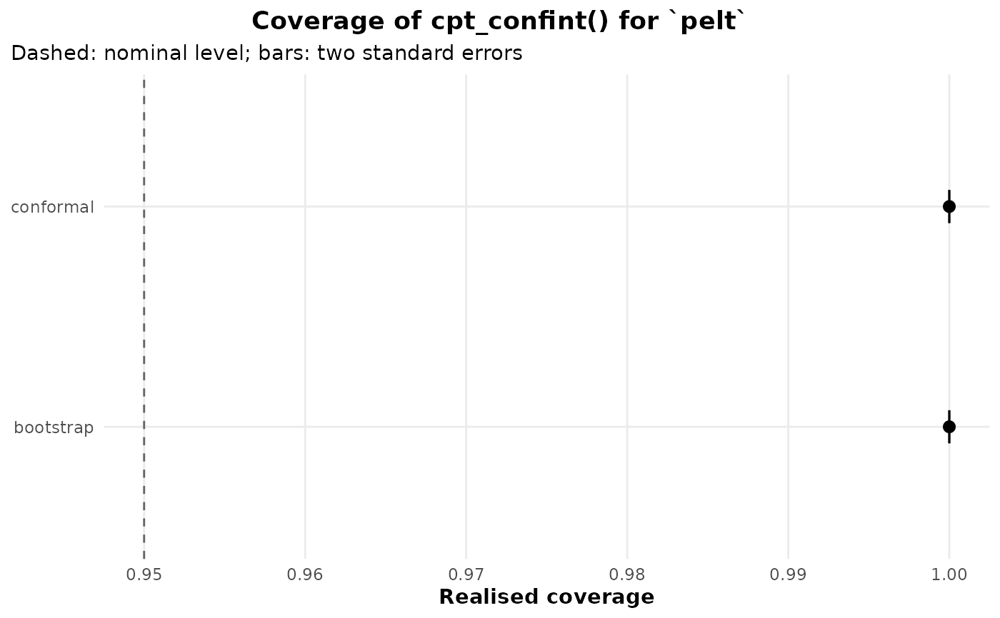

How often do the confidence intervals cover? A Monte Carlo check
Source:R/conformal.R
cpt_confint_coverage.RdSimulates series with one changepoint of known location, detects with
method, computes cpt_confint() by each route in
routes, and reports how often the interval contains the true
location and how wide it was. This is the measurement behind the
coverage statements in ?cpt_confint, and the way to check them
for your own series length, jump size and noise before relying on an
interval.
Usage
cpt_confint_coverage(
method = "pelt",
routes = c("conformal", "bootstrap"),
n = 200,
jump = 2,
noise = c("gauss", "t", "ar1"),
n_sim = 100,
level = 0.95,
B = 100,
seed = NULL,
...
)
# S3 method for class 'ggcpt_coverage'
print(x, ...)
# S3 method for class 'ggcpt_coverage'
tidy(x, ...)
# S3 method for class 'ggcpt_coverage'
autoplot(object, ...)Arguments
- method
Detection method passed to
cpt_detect(). Defaults to"pelt".- routes
Which
cpt_confint()routes to measure: any of"conformal","bootstrap","native","posterior"and"nsp". Defaults toc("conformal", "bootstrap").- n
Series length. Defaults to
200.- jump
Size of the mean shift, in noise standard deviations. Defaults to
2.- noise
Noise model, as in
cpt_simulate():"gauss"(default),"t"or"ar1".- n_sim
Number of simulated series. Defaults to
100.- level
Nominal level. Defaults to
0.95.- B
Replicates (bootstrap) or permutations (conformal) per interval. Defaults to
100.- seed
Optional seed, scoped to this call.
- ...
Passed to
cpt_simulate()(rho,df, ...).- x
A
ggcpt_coverageobject.- object
A
ggcpt_coverageobject.
Value
A ggcpt_coverage tibble with one row per route:
method, route, n_sim, n_detected,
n_failed, coverage, coverage_se (its Monte Carlo
standard error), mean_width, level. print(),
autoplot() (coverage with a two-standard-error bar against the
nominal level) and tidy() work on it.
Details
The changepoint sits at floor(n / 2). Coverage is
computed over the replicates in which the detector reported at least
one changepoint, taking the one nearest the truth, so it is coverage
given a detection; n_detected says how many replicates
that is. A route that fails on a replicate (an engine that supplies no
native interval, say) is counted in n_failed rather than as a
miss.
Examples
cov <- cpt_confint_coverage(n_sim = 6, n = 80, B = 20, seed = 1)
cov
#> ggcpt_coverage (realised coverage of cpt_confint())
#> Design: n = 80, one change of 2 sd at n/2, gauss noise
#>
#> # A tibble: 2 × 9
#> method route n_sim n_detected n_failed coverage coverage_se mean_width level
#> <chr> <chr> <int> <int> <int> <dbl> <dbl> <dbl> <dbl>
#> 1 pelt confor… 6 6 0 1 0 3 0.95
#> 2 pelt bootst… 6 6 0 1 0 5 0.95
ggplot2::autoplot(cov)
